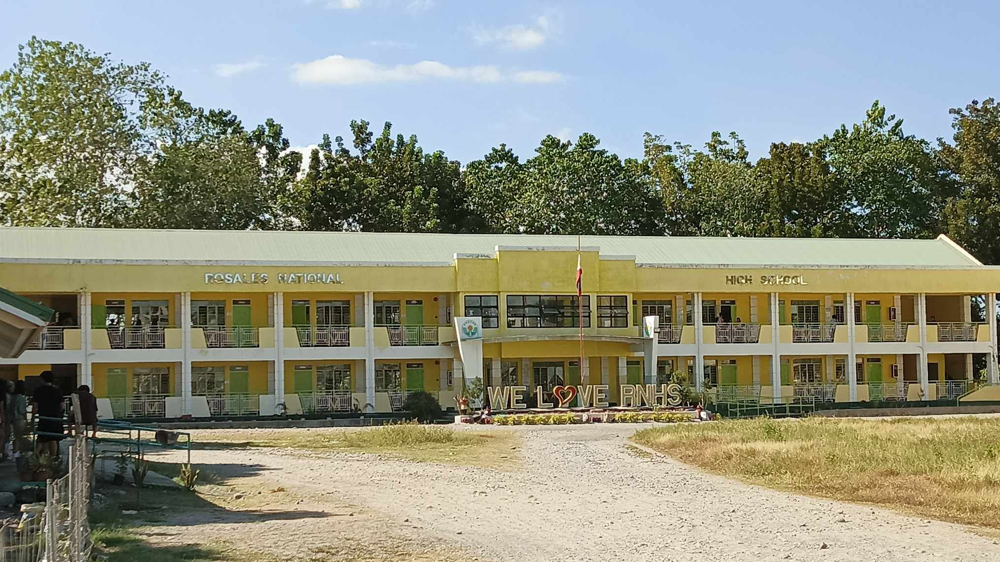

Pagcor Building
Mandate
The Department of Education in the Philippines originated in 1863 as the Superior Commission of Primary Instruction and underwent various reorganizations in the 20th century to align with changing administrations and charters. It was officially established as the present-day Department of Education through Republic Act 9155, the Governance of Basic Education Act of 2001. DepEd is responsible for formulating, implementing, and coordinating policies, plans, programs, and projects in both formal and non-formal basic education. It oversees all elementary and secondary education institutions, including alternative learning systems, and aims to establish and maintain a comprehensive and relevant system of basic education in line with national development goals.
Vision
We dream of Filipinos who passionately love their country and whose values and competencies enable them to realize their full potential and contribute meaningfully to building the nation. As a learner-centered public institution, the Department of Education continuously improves itself to better serve its stakeholders.
Mission
To protect and promote the right of every Filipino to quality, equita- ble, culture-based, and complete basic education where: Students learn in a child-friendly, gender-sensitive, safe, and moti- vating environment. Teachers facilitate learning and constantly nurture every learner. Administrators and staff, as stewards of the institution, en- sure an enabling and supportive environment for effective learning to hap- pen, Family, community, and other stakeholders are actively engaged and share responsibility for developing life-long learners.